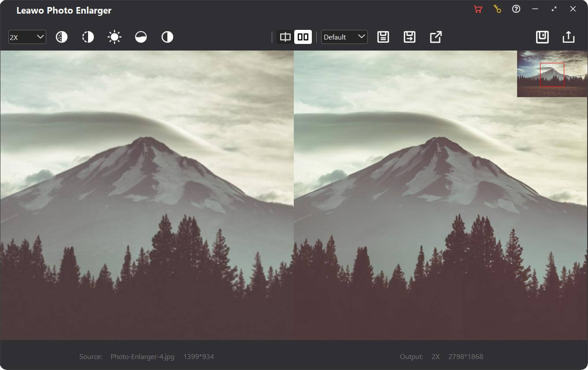

3.9.PROCESAMIENTO DIGITAL DE IMAGENES.
Concepto.
El procesamiento de imágenes es el conjunto de técnicas y algoritmos que se utilizan para manipular, analizar y mejorar las imágenes digitales. Este proceso se lleva a cabo mediante el uso de programas de computadora que pueden realizar diferentes tipos de operaciones, como filtrado, segmentación, restauración, reconocimiento de patrones y compresión de imágenes.
Objetivo.
Uno de los principales objetivos del procesamiento de imágenes es mejorar la calidad de las imágenes, eliminando el ruido, la distorsión y otros artefactos que pueden afectar la calidad visual y la interpretación de la misma. También se utiliza para realizar tareas de análisis, como la detección de bordes, la medición de objetos y la identificación de características únicas en las imágenes. El procesamiento de imágenes es un campo de estudio que tiene múltiples aplicaciones en áreas como la medicina, la ingeniería, la biología, la seguridad, la industria del entretenimiento y la astronomía. Por ejemplo, en medicina se utiliza para la detección temprana de enfermedades a partir de imágenes médicas, como radiografías y tomografías, mientras que en la industria del entretenimiento se utiliza para la creación de efectos especiales y la animación de personajes y escenarios. En resumen, el procesamiento de imágenes es una herramienta esencial en la era digital en la que vivimos, ya que nos permite mejorar la calidad y comprensión de las imágenes digitales para un mejor uso y tratamiento en áreas tan diferentes como la salud, la investigación y el entretenimiento.
Etapa de procesamiento de imagenes.
- Adquisición: Es la primera etapa del procesamiento de imágenes. En este paso se adquiere una imagen, ya sea a través de una cámara, escáner o cualquier otro dispositivo. La calidad de la imagen adquirida dependerá de la calidad del dispositivo utilizado.
- Preprocesamiento:En esta etapa se realiza una serie de operaciones para mejorar la calidad de la imagen adquirida. Esto incluye la eliminación de ruido, la corrección de iluminación o contraste, la eliminación de fondos no deseados o la eliminación de imágenes duplicadas.
- Segmentación: Es la etapa del procesamiento de imágenes que se encarga de dividir una imagen en varias partes. Esto se hace con el fin de identificar objetos o características en la imagen. Se pueden utilizar algoritmos para segmentar imágenes en base a color, forma o textura, entre otros métodos.
- Extracción de características: Es la etapa del procesamiento de imágenes en la que se identifican y extraen características relevantes de la imagen. Por ejemplo, la detección de bordes, la identificación de estructuras geométricas o la identificación de patrones específicos.
- Reconocimiento:En esta etapa se utilizan técnicas de aprendizaje automático para clasificar las imágenes o distinguirlas de otras. Se pueden utilizar diferentes enfoques para el reconocimiento de imágenes, como redes neuronales, algoritmos de clasificación o árboles de decisión.
- Interpretación: Es la última etapa del procesamiento de imágenes y consiste en interpretar los resultados obtenidos en las etapas anteriores. En esta fase se toman decisiones basadas en los datos obtenidos y se toman decisiones basadas en ellos. Por ejemplo, se puede determinar si una imagen muestra un objeto de interés o si hay algún problema con la imagen adquirida.
- La complejidad espacial de un algoritmo es como el espacio que necesitas para guardar todos tus útiles escolares en tu mochila. Imagina que tienes diferentes asignaturas y cada una tiene su propio conjunto de libros, cuadernos y material de oficina.
- La complejidad espacial de tu mochila es el espacio total necesario para guardar todos estos artículos.
Si tienes una asignatura sencilla como Matemáticas, quizás solo necesites un libro y un cuaderno, que ocupan poco espacio. Pero para una asignatura con muchos proyectos como Arte, podrías necesitar varios cuadernos de dibujo, pinturas, pinceles y demás, que ocupan mucho más espacio. De igual forma, en los algoritmos, algunas tareas requieren poca memoria, mientras que otras necesitan mucha más.
Comprender la complejidad del espacio nos ayuda a elegir la mejor manera de empacar nuestra mochila (o escribir nuestro algoritmo) para ocupar el mínimo espacio posible. Esto garantiza que quepa todo lo necesario sin quedarnos sin espacio.
Componentes.
- Parte fija
Esto incluye el espacio necesario para constantes, variables simples, estructuras de datos de tamaño fijo y el propio código. Es la memoria que no cambia, independientemente del tamaño de entrada.
Ejemplos:
• Espacio necesario para almacenar constantes como números o matrices de tamaño fijo.
• Memoria utilizada por el código del programa y las instrucciones.
- Parte variable
Esto incluye el espacio necesario para la asignación de memoria dinámica, el espacio de pila recursiva y las variables temporales cuyo tamaño depende del tamaño de entrada. Ejemplos:
• Espacio necesario para estructuras de datos dinámicas como listas enlazadas , árboles o gráficos , que crecen con el tamaño de entrada.
• Memoria utilizada para la pila de recursión durante llamadas de función recursiva.
• Variables temporales y estructuras de datos utilizadas durante la ejecución del algoritmo .
¿Para qué es necesaria la complejidad espacial.
- Restricciones de memoria.
- Mejora del rendimiento.
- Escalabilidad.
- Optimización de algoritmos.
- Previsibilidad y confiabilidad
- Rentabilidad.
- Aplicaciones móviles
Los dispositivos móviles tienen memoria limitada en comparación con los ordenadores de escritorio o servidores. Las aplicaciones que utilizan la memoria eficientemente ofrecen un mejor rendimiento y una mejor experiencia de usuario.
- Servidores web
Los servidores web que manejan numerosas solicitudes necesitan administrar la memoria de manera eficiente para atender a varios clientes simultáneamente sin agotar los recursos.
- Procesamiento de macrodatos
En aplicaciones de big data, los algoritmos deben procesar grandes cantidades de datos eficientemente. Los algoritmos con baja complejidad espacial pueden gestionar conjuntos de datos más grandes sin experimentar problemas de memoria.
- Sistemas integrados
Dispositivos como relojes inteligentes, sensores y microcontroladores tienen límites de memoria estrictos. Los algoritmos que optimizan el espacio garantizan que estos dispositivos realicen sus tareas de forma fiable.

3.9.3Modificación inversa.
¿Que es?.
Flip es una librería de código abierto que permite generar imágenes sintéticas en pocos pasos a partir de un pequeño conjunto de imágenes compuestas por fondos y objetos (imágenes que estarían sobre el fondo). Para ello permite que el usuario pueda aplicar transformaciones sobre los objetos como girar con respecto a un eje, cambiar el tamaño o rotar. Con lo anterior definido, se realiza una composición con un conjunto de opciones para establecer el estado final del fondo y la ubicación de los objetos.
¿En que consiste?.
Básicamente, esta modificación consiste en una transformación que produce un “movimiento” de la columna mm, fila nn a la columna mmy fila (nmax−n)+1(nmax−n)+1, para nmaxnmax como la dimensión en la dirección de nn,
es decir.
Vflip(m,n)=VI(m,(nmax−n)+1)Vflip(m,n)=VI(m,(nmax−n)+1) donde VflipVflip es la matriz de output que corresponde a la transformación de inversión.

• Recursos limitados: La mayoría de los sistemas tienen recursos de memoria limitados. El uso eficiente de la memoria garantiza que los programas puedan ejecutarse dentro de estas limitaciones. • Sistemas embebidos : Dispositivos como microcontroladores y dispositivos IoT tienen una memoria muy limitada. Los algoritmos que optimizan el espacio son cruciales para su funcionamiento.
• Eficiencia de caché: los algoritmos que utilizan la memoria de manera eficiente pueden hacer un mejor uso de la caché de la CPU, lo que genera tiempos de ejecución más rápidos. • Gastos generales reducidos: un menor uso de memoria puede reducir los gastos generales de la gestión de memoria, como la recolección de basura y la paginación, mejorando así el rendimiento.
• Manejo de grandes cantidades de datos: A medida que aumenta el tamaño de los datos, la complejidad espacial se vuelve más crítica. Los algoritmos con alta complejidad espacial podrían no manejar grandes conjuntos de datos eficazmente. • Nube y sistemas distribuidos: En la computación en la nube y los sistemas distribuidos, el uso de memoria impacta directamente en el costo y el rendimiento. Optimizar la complejidad del espacio facilita una mejor gestión de los recursos.
• Compensaciones con la complejidad temporal: Comprender la complejidad espacial permite una mejor optimización al equilibrar las compensaciones entre tiempo y espacio. Por ejemplo, usar más memoria (complejidad espacial) para lograr tiempos de ejecución más rápidos (complejidad temporal). • Algoritmos in situ: el diseño de algoritmos in situ que utilicen un espacio adicional mínimo puede ser crucial para la eficiencia, especialmente en entornos restringidos.
• Comportamiento predecible: Los algoritmos con requisitos de espacio predecibles son más fáciles de administrar y depurar. Tienen menos probabilidades de experimentar problemas como fugas de memoria o desbordamientos de búfer. • Cómo evitar fallos: el uso eficiente del espacio ayuda a evitar errores de falta de memoria, que pueden provocar que los programas se bloqueen o se comporten de forma impredecible.
• Costos de hardware reducidos: los algoritmos eficientes pueden reducir la necesidad de hardware de memoria adicional, lo que disminuye los costos generales del sistema. • Costos operativos: En entornos como la computación en la nube, donde los recursos se facturan en función del uso, reducir el uso de memoria puede generar ahorros de costos significativos.
Ejemplos de complejidad espacial.
La complejidad espacial se compone de dos componentes principales: parte fija y parte variable.
- Parte fija
Uso del procesamiento de imagenes.
El procesamiento de imágenes es una técnica que se utiliza en muchos campos alrededor del mundo. Una de las aplicaciones más populares es en la medicina. Los médicos pueden utilizar esta técnica para analizar los rayos X y las exploraciones de resonancia magnética para detectar cualquier anomalía en el cuerpo de los pacientes. Otra aplicación es en la industria del entretenimiento. Los diseñadores gráficos y los productores de películas utilizan el procesamiento de imágenes para hacer efectos especiales y crear mundos virtuales impresionantes. También se utiliza en la fotografía para editar imágenes y mejorar la calidad de las imágenes. En el campo de la seguridad, el procesamiento de imágenes se utiliza para las cámaras de seguridad. Los algoritmos pueden detectar objetos extraños en las imágenes y alertar al personal de seguridad sobre una posible amenaza. En el campo de la robótica, el procesamiento de imágenes se utiliza para orientar a los robots en su entorno. Los robots pueden utilizar las imágenes para navegar y evitar obstáculos en su camino. En resumen, el procesamiento de imágenes se utiliza en muchos campos, incluyendo medicina, entretenimiento, seguridad y robótica. Es una técnica versátil que ha revolucionado la forma en que se manejan las imágenes en todo el mundo.

3.9.2AMPLIACION ESPACIAL..
Definición
La complejidad espacial mide la cantidad de memoria que necesita un algoritmo para ejecutarse. Indica la cantidad total de espacio o memoria que utilizará un algoritmo de principio a fin. Esto incluye el espacio necesario para todas las variables, estructuras de datos y cualquier espacio adicional utilizado durante la ejecución.